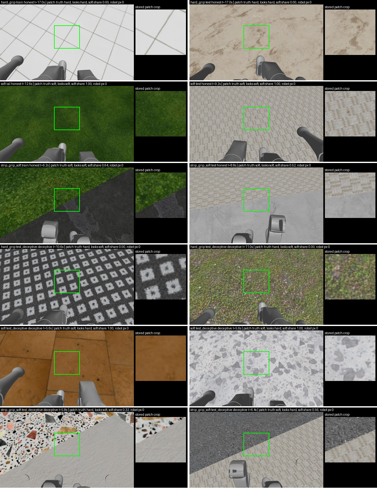
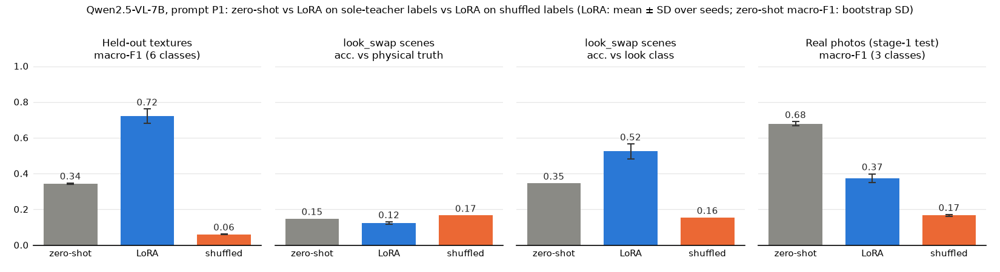

Vision from Touch
Step 1 showed that a sensing sole can tell the K1 what it is standing on, after the step. Here the sole becomes the teacher: the robot looks, steps, and the sole says what the floor was. A vision model learns to predict that before the step. Tested with a ViT and with a vision-language model.
In short
- A camera can learn the floor from the sole's labels. A small head on a frozen ViT, taught only by the sole, scores 0.985 on hard against soft floor with textures it never saw. Taught by simulator truth it scores the same.
- The sole is the better teacher when the gait is new. With labels from a gait the teachers never saw, vision taught by the sole reaches 0.49, vision taught by joints and IMU 0.10, which is chance. On known gaits the two teachers tie.
- Vision reads the look, not the physics. On floors that look like one thing and behave like another, vision before the step scores 0.03. The sole after the step scores 0.997.
- A small ViT is enough. ViT-S matches ViT-B (0.985) at more than twice the speed.
- The 7B vision-language model is worse and far slower. Zero-shot it scores 0.668 at 47 frames per second. Tuned on the sole's labels it improves in simulation and gets worse on real photos.
- New materials are the weak point. With a whole material family held out of training, the ViT head drops from 0.985 to 0.726.
- The two-class task is easy, and it is still simulation. Hard and soft floors differ so much that it cannot rank the teachers. A real recording is still the missing piece.
What was done
- Eyes for the step-1 data. The step-1 episodes were replayed exactly and rendered through an RGB-D camera on the K1's torso. For every footstep the dataset holds what the robot saw before the step and what the sole felt after it.
- Floors. Photo textures from a CC0 library, with a share of them never used in training. Some scenes are made deceptive on purpose: the floor looks like one class and behaves like another.
- Teachers. A classifier that reads only the sole, and one that reads only joints and IMU. The sole teacher uses coarse features only: four pressure blocks, four shear vectors, centre of pressure, total force and contact area. Step 1 showed that the fine pressure map does not survive a change of sensor model.
- ViT. A frozen DINOv3 ViT (B/16 and S/16) with a small trained head. The same head is trained several times, changing only who supplies the labels: the sole teacher, the joints teacher, or simulator truth as the ceiling.
- VLM. Qwen2.5-VL-7B, asked for the floor class as a one-word answer. Tested as it comes, and after a LoRA fine-tune on the sole teacher's labels. SigLIP with text prompts is the second zero-shot model.
- Two experiments. The first is broad: six floor classes, three gaits, an image crop around where the foot will land. The second is narrow: hard against soft floor, one gait, and one fixed patch of floor ahead of the feet that is classified on every frame.
- Scores. Macro-F1 per step against simulator truth, on textures held out of training. Every number was recomputed by an independent checker.


The idea in one clip
The K1 walks over hard and soft patches in both orders, then over two deceptive ones. The box in the camera view is the patch being classified. The panel shows the true floor, the two vision models before each step, and the sole and the joints after it. Green is right, red is wrong.
| Steps right | ViT head | VLM, zero-shot | Sole | Joints + IMU |
|---|---|---|---|---|
| All 126 steps | 91 | 100 | 125 | 126 |
| Honest patches, 103 steps | 91 | 89 | 102 | 103 |
| Deceptive patches, 23 steps | 0 | 11 | 23 | 23 |
Reading the clip. All twelve honest mistakes of the ViT head come one to three steps before a floor change: the patch lies ahead of the foot, so vision already reports the next floor. On the deceptive patches it follows the look on every step. The VLM's eleven is not insight. It calls carpet hard, so it is right on the hard floor that looks like carpet and wrong on all eleven steps of the soft floor that looks hard.
This is one run, so the counts illustrate the result. The measured numbers are in the sections below.
Who teaches vision better
The same ViT head, trained four times. Only the source of the labels changes.
| Labels for the vision head | Vision score | Teacher's own score |
|---|---|---|
| Simulator truth (ceiling) | 0.985 | – |
| Sole teacher | 0.985 | 0.997 |
| Joints + IMU teacher | 0.984 | 0.990 |
| Both together | 0.985 | 0.995 |
| Shuffled labels (control) | 0.565 | chance 0.500 |
Reading the table. A camera taught by the sole is as good as a camera taught by the simulator. But this experiment cannot say which teacher is better: with only hard and soft floors every teacher is right on about 99 % of steps, so all the label sets are nearly the same. The six-class experiment below is where the teachers come apart.
Hard against soft, gait G113, 5,029 test steps on 25 held-out textures. One classifier that both sees the patch and feels the step scores 0.997, but it answers after the step and adds nothing over the sole alone.
ViT, SigLIP and the VLM
Four vision models on the same patch and the same test steps.
| Model | Training | Score | Frames per second |
|---|---|---|---|
| DINOv3 ViT-B + head | head on sole labels | 0.985 | 1,770 |
| DINOv3 ViT-S + head | head on sole labels | 0.985 | 4,006 |
| SigLIP with text prompts | none | 0.976 | 2,588 |
| Qwen2.5-VL-7B | none | 0.668 | 47 |
| DINOv3 ViT-B + head, a whole material family held out | head on sole labels | 0.726 | – |
Reading the table. The small ViT loses nothing to the large one. SigLIP comes close with no training, but only when the prompts name the materials in the dataset; generic prompts such as "a hard floor" were below chance. The VLM mostly calls soft floors hard and is about forty times slower than the ViT.
Speeds are for one H100 that another job was also using, so they are lower bounds.
Floors that lie
A hard floor textured as carpet, a soft floor textured as tiles. This is the case a camera cannot solve, and the reason to keep the sole.
| Source | Against the real floor | Against the look |
|---|---|---|
| ViT head, before the step | 0.03 | 0.97 |
| Sole, after the step | 0.997 | – |
| Joints + IMU, after the step | 0.992 | – |
Reading the table. Vision is confidently wrong: it reports what the floor looks like. A head taught by the sole is fooled just as much as one taught by truth, because both learned the same thing from honest floors, that a look goes with a class. The sole reads no image, so it is not fooled.
3,559 deceptive steps, kept out of training entirely.
When the floor changes
- Vision is early. At an honest boundary the ViT head switches to the new floor about 1.3 steps before the foot gets there, because the patch is ahead of the feet.
- The sole and the joints are on time. Both name the new floor at the first step on it.
- On a deceptive boundary vision never switches. Nothing changes in the image.
Only 24 boundaries in the test data, all from hard to soft.
Six classes and three gaits
The broad experiment: grippy, slippery, soft, rough, sloped and plank floors, three gaits, and an image crop around the place where the foot will land. Here the teachers differ.
| Labels for the vision head | Gaits the teachers saw | A gait they never saw |
|---|---|---|
| Sole teacher | 0.82 | 0.49 |
| Joints + IMU teacher | 0.82 | 0.10 |
| Simulator truth (ceiling) | 0.86 | 0.87 |
| Sole teacher, shifted sensor model | 0.83 | 0.50 |

Reading the table. This repeats the step-1 finding one level up. On a gait it never saw, the joints teacher labels almost every step as planks, and vision taught by it learns nothing. The sole teacher still gives usable labels. The gap rests on one held-out gait and on few test textures, so its size is uncertain; its direction is not.


The VLM in detail
- Real photos, no training. On 1,350 real ground photos from the GTOS-Mobile set, Qwen2.5-VL-7B scores 0.68 over the three classes that have photos. It tells soft, rough and hard ground apart, but calls dry concrete slippery.
- Simulated frames, no training. 0.34 over six classes. It cannot read slopes or planks from a crop.
- LoRA on the sole's labels. 0.72 on held-out textures, about double. A ViT head on the same crops scores 0.82.
- The cost of that tuning. On the real photos the tuned model falls from 0.68 to 0.38. It learned the simulator's textures, not floors.
- Deceptive floors. Tuned or not, it follows the look, like the ViT.

For this task the VLM is not worth its size. It is slower by a factor of forty, weaker than a ViT with a small head, and tuning it on simulation harms what it knew about real floors. Its use is elsewhere: questions a classifier cannot be asked.
Independent check
After each experiment a separate checker that did none of the work recomputed the numbers with its own code, searched for leaks between training and test, and looked at samples.
| Experiment | Claims | Hold | Hold with caveats | Do not hold | Not verifiable |
|---|---|---|---|---|---|
| Six classes, three gaits | 59 | 33 | 22 | 1 | 3 |
| Fixed patch, hard against soft | 39 | 20 | 17 | 0 | 2 |
- No leaks found. No test texture or test episode in any training set, and no teacher labelled an episode it had trained on.
- Not just colour. The mean colour of the patch alone gives 0.54, so the ViT is not simply learning that green means soft.
- A cue without pixels. The robot stands about 6 mm lower on soft floor. A model that sees no image and reads only body state reaches 0.957. The ViT heads do not use this, but a depth model could.
- The claim that failed. That LoRA makes the VLM worse on deceptive floors against the real floor. The difference is inside the noise.
Limits
- Simulation. The camera is rendered and the sole is simulated. The step-1 limits of the sole model all still apply.
- An easy second task. Hard and soft floors differ by orders of magnitude in stiffness. That is why every teacher is nearly perfect there.
- Textures are not materials. A texture on a flat plane has no depth, gloss or deformation. Real carpet and real tile differ in more than a picture.
- No shadow. The robot's own shadow was removed from the renders after it covered part of the patch in about a third of frames. A real camera will see it.
- One gait in the second experiment, and floor changes in one direction only in its test data.
- Few test textures in the first experiment: three per class, so its intervals are wide.
More clips
Macro-F1 per step on held-out textures; means over three training runs. Step 1 of the project: Terrain from Touch. Textures: ambientCG, CC0. Models: DINOv3 (ViT-B/16, ViT-S/16), SigLIP, Qwen2.5-VL-7B.